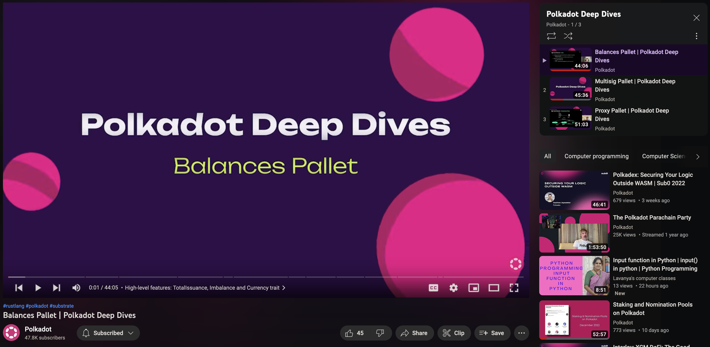

<!DOCTYPE html>
<html lang="en">

<head>
  <meta charset="utf-8" />
  <meta name="viewport" content="width=device-width, initial-scale=1.0, maximum-scale=1.0, user-scalable=no" />

  <title>FRAME Pallets & Traits</title>
  <link rel="shortcut icon" href="./../../../assets/favicon.ico" />
  <link rel="stylesheet" href="./../../../dist/reset.css" />
  <link rel="stylesheet" href="./../../../dist/reveal.css" />
  <link rel="stylesheet" href="./../../../assets/styles/PBA-theme.css" id="theme" />
  <link rel="stylesheet" href="./../../../css/highlight/shades-of-purple.css" />

  <link rel="stylesheet" href="./../../.././assets/styles/custom-classes.css" />

</head>

<body class="site">
  <header class="site-header">
    <!-- This logo is a link only on the watching server, not the production build -->
    <a href="">
      
    </a>
  </header>
  <main class="reveal">
    <article class="slides">
      <section  data-markdown><script type="text/template">

# FRAME Pallets & Traits
</script></section><section  data-markdown><script type="text/template">
## Overview

We will walk through the codebase and touch on various commonly used pallets and traits.

The goal is to learn by example, and show how you can use the Substrate codebase to self-educate and solve problems.
</script></section><section  data-markdown><script type="text/template">
## System Pallet
</script></section><section  data-markdown><script type="text/template">
## Utility Pallet
</script></section><section  data-markdown><script type="text/template">
## Proxy Pallet
</script></section><section  data-markdown><script type="text/template">
## Multisig Pallet
</script></section><section  data-markdown><script type="text/template">
## Held vs Frozen Balance

- Reserved -> Held
- Locked -> Frozen
- Both states belong to the user... but cannot be spent / transferred.
- Held balances stack on top of one another.
  - Useful for user deposits, or other use cases where there is sybil concerns.
  - Ex: Deposit for storing data on-chain,
- Frozen balances can overlap each other.
  - Useful when you want to use the same tokens for multiple use cases.
  - Ex: Using the same tokens for both staking and voting in governance.
</script></section><section  data-markdown><script type="text/template">
## Held Balances

```text
  Total Balance
┌─────────────────────────────────────────────────────────┐
┌────────────────────────────────┼────────────────────────┐
│┼┼┼┼┼┼┼┼┼┼┼┼┼┼┼┼┼┼┼┼┼┼┼┼┼┼┼┼┼┼┼┼┼                     |ED│
└────────────────────────────────┼────────────────────────┘
   Held Balance                      Transferable Balance

┌───────────┐
│┼┼┼┼┼┼┼┼┼┼┼│  Various Storage Deposits
└───────────┤
            ├──────┐
            │┼┼┼┼┼┼│  Treasury Proposal Deposit
            └──────┤
                   ├──────────┐
                   │┼┼┼┼┼┼┼┼┼┼│  Multisig Deposit
                   └──────────┤
                              ├──┐
                              │┼┼│  Proxy Deposit
                              └──┘
```
</script></section><section  data-markdown><script type="text/template">
## New Holds Example

```text
  Total Balance
┌─────────────────────────────────────────────────────────┐
┌────────────────────────────────┼────────────────────────┐
│┼┼┼┼┼┼┼┼┼┼┼┼┼┼┼┼┼┼┼┼┼┼┼┼┼┼┼┼┼┼┼┼┼                     |ED│
└────────────────────────────────┼────────────────────────┘
   Held Balance                      Transferable Balance


                                     ┌────────────────────┐
              New Hold Successful!   │┼┼┼┼┼┼┼┼┼┼┼┼┼┼┼┼┼┼┼┼│
                                     └────────────────────┘

                         ┌────────────────────────────────┐
    New Hold Failed :(   │┼┼┼┼┼┼┼┼┼┼┼┼┼┼┼┼┼┼┼┼┼┼┼┼┼┼┼┼┼┼┼┼│
                         └────────────────────────────────┘
```
</script></section><section  data-markdown><script type="text/template">
## Frozen Balances

```text
  Total Balance
┌─────────────────────────────────────────────────────────┐
┌────────────────────────────────┼────────────────────────┐
│XXXXXXXXXXXXXXXXXXXXXXXXXXXXXXXXX                     |ED│
└────────────────────────────────┼────────────────────────┘
   Frozen Balance                    Transferable Balance

┌───────────────────────┐
│XXXXXXXXXXXXXXXXXXXXXXX│  Vesting Balance
└───────────────────────┘

┌────────────────────────────────┐
│XXXXXXXXXXXXXXXXXXXXXXXXXXXXXXXX│  Staking Bond Freeze
└────────────────────────────────┘

┌─────────────────┐
│XXXXXXXXXXXXXXXXX│  Governance Vote Freeze
└─────────────────┘
```
</script></section><section  data-markdown><script type="text/template">
## New Freeze Example

```text
  Total Balance
┌─────────────────────────────────────────────────┐
┌────────────────────────────────┼────────────────┐
│XXXXXXXXXXXXXXXXXXXXXXXXXXXXXXXXX             |ED│
└────────────────────────────────┼────────────────┘
   Frozen Balance                    Transferable Balance

┌───────────────────────┐
│XXXXXXXXXXXXXXXXXXXXXXX│  New Freeze Successful!
└───────────────────────┘

┌─────────────────────────────────────────────────┐
│XXXXXXXXXXXXXXXXXXXXXXXXXXXXXXXXXXXXXXXXXXXXXXXXX│  New Freeze Successful!
└─────────────────────────────────────────────────┘

┌─────────────────────────────────────────────────────────┐
│XXXXXXXXXXXXXXXXXXXXXXXXXXXXXXXXXXXXXXXXXXXXXXXXXXXXXXXXX│  New Freeze Successful!
└─────────────────────────────────────────────────────────┘
```
</script></section><section  data-markdown><script type="text/template">
## Freeze and Hold Overlap

```text
  Total Balance
┌──────────────────────────────────────────────────────────────┐
   Held Balance
┌────────────────────────────────┼─────────────────────────────┐
│┼┼┼┼┼┼┼┼┼┼┼┼┼┼┼┼┼┼┼┼┼┼┼┼┼┼                                | E │
│XXXXXXXXXXXXXXXXXXXXXXXXXXXXXXXXX                         | D │
└────────────────────────────────┼─────────────────────────────┘
   Frozen Balance                    Transferable Balance
```
</script></section><section  data-markdown><script type="text/template">
## Balances Pallet & Fungible Traits
</script></section><section  data-markdown><script type="text/template">
## Assets Pallet & Fungibles Traits
</script></section><section  data-markdown><script type="text/template">
## NFT Pallet & Non-Fungibles Traits
</script></section><section  data-markdown><script type="text/template">
## Transaction Payment Pallet
</script></section><section  data-markdown><script type="text/template">
## Sudo Pallet
</script></section><section  data-markdown><script type="text/template">
## Conviction Voting + Referenda Pallet

(Open Governance)
</script></section><section  data-markdown><script type="text/template">
## Ranked Collectives + Whitelist Pallet

(Technical Fellowship)
</script></section><section  data-markdown><script type="text/template">
## Scheduler Pallet
</script></section><section  data-markdown><script type="text/template">
## Polkadot Deep Dives



https://www.youtube.com/watch?v=_FwqB4FwWXk&list=PLOyWqupZ-WGsfnlpkk0KWX3uS4yg6ZztG
</script></section><section  data-markdown><script type="text/template">
<!-- .slide: data-background-color="#4A2439" -->

# Questions
</script></section>
    </article>
  </main>

  <script src="./../../../dist/reveal.js"></script>

  <script src="./../../../plugin/markdown/markdown.js"></script>
  <script src="./../../../plugin/highlight/highlight.js"></script>
  <script src="./../../../plugin/zoom/zoom.js"></script>
  <script src="./../../../plugin/notes/notes.js"></script>
  <script src="./../../../plugin/math/math.js"></script>

  <script src="./../../../assets/plugin/mermaid.js"></script>
  <script src="./../../../assets/plugin/mermaid-theme.js"></script>

  <script src="./../../../assets/plugin/chart/chart.js"></script>
  <script src="./../../../assets/plugin/chart/chart.min.js"></script>

  <script src="./../../../assets/plugin/tailwindcss.min.js"></script>

  <script>
    function extend() {
      var target = {};
      for (var i = 0; i < arguments.length; i++) {
        var source = arguments[i];
        for (var key in source) {
          if (source.hasOwnProperty(key)) {
            target[key] = source[key];
          }
        }
      }
      return target;
    }

    // default options to init reveal.js
    var defaultOptions = {
      controls: true,
      progress: true,
      history: true,
      center: true,
      transition: 'default', // none/fade/slide/convex/concave/zoom
      slideNumber: true,
      mermaid: {
        startOnLoad: false,
        logLevel: 3,
        theme: 'base',
        themeVariables: {
          primaryColor: purple,
          primaryTextColor: white,
          primaryBorderColor: pink,
          lineColor: pink,
          secondaryColor: lightPurple,
          tertiaryColor: lightPurple,
        },
      },
      chart: {
        defaults: {
          color: 'lightgray', // color of labels
          scale: {
            beginAtZero: true,
            ticks: { stepSize: 1 },
            grid: { color: "lightgray" }, // color of grid lines
          },
        },
        line: { borderColor: ["#ccc", "#E6007A", "#6D3AEE"], "borderDash": [[5, 10], [0, 0]] },
        bar: { backgroundColor: ["#ccc", "#E6007A", "#6D3AEE"] },
      },
      plugins: [
        RevealMarkdown,
        RevealHighlight,
        RevealZoom,
        RevealNotes,
        RevealMath,
        RevealMermaid,
        RevealChart
      ]
    };

    // options from URL query string
    var queryOptions = Reveal().getQueryHash() || {};

    var options = extend(defaultOptions, {"width":1400,"height":900,"margin":0,"minScale":0.2,"maxScale":2,"transition":"none","controls":true,"progress":true,"center":true,"slideNumber":true,"backgroundTransition":"fade"}, queryOptions);
  </script>


  <script>
    Reveal.initialize(options);
  </script>
</body>

</html>